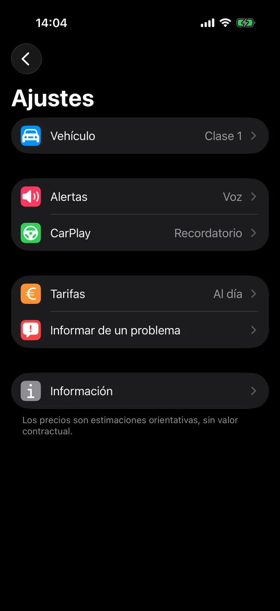
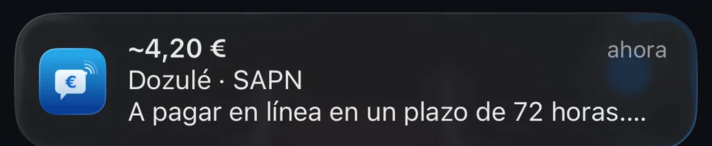
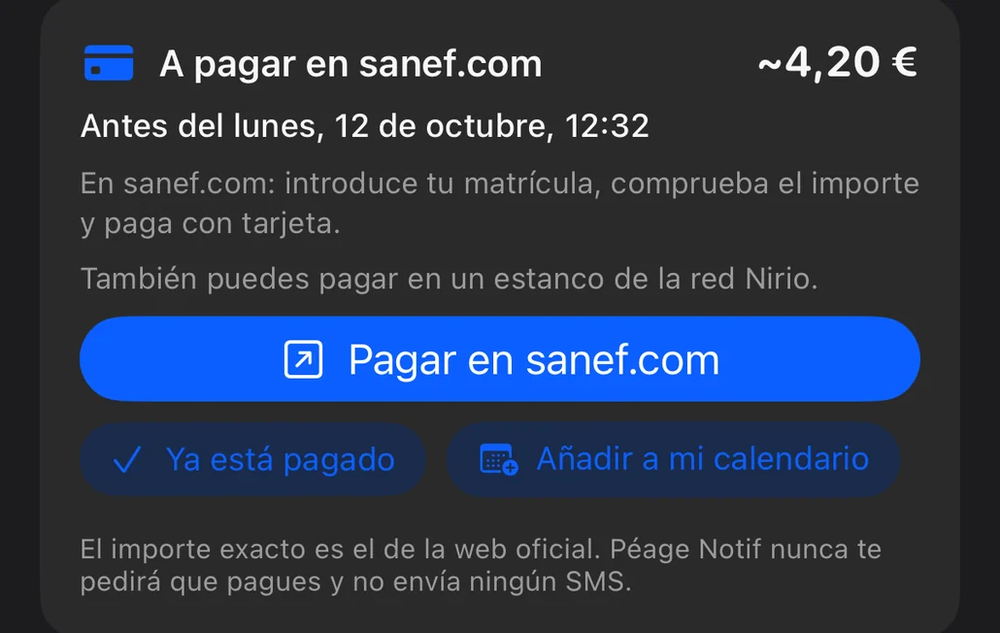
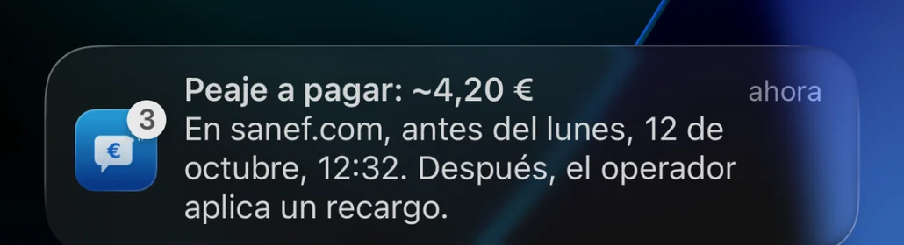
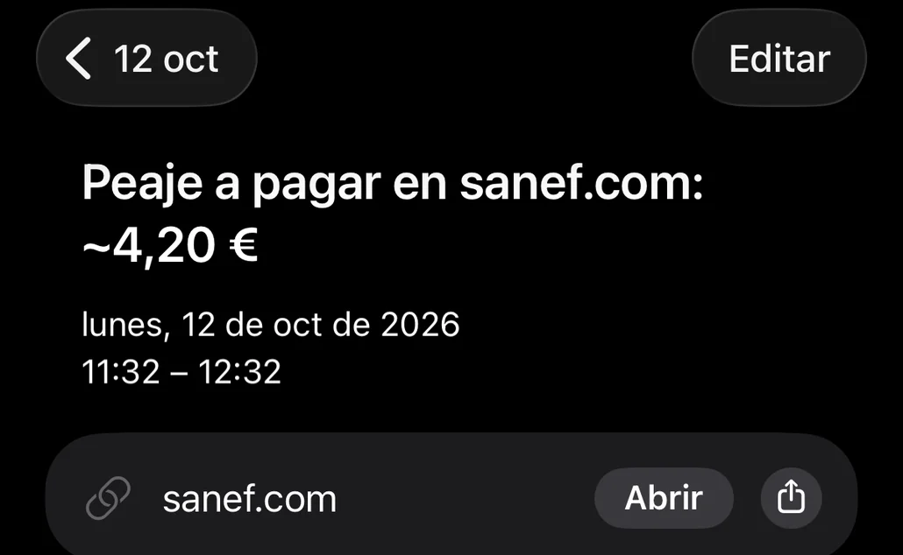

La primera app que te anuncia el precio en el momento en que pasas el peaje, ya sea de flujo libre o con barrera. Gratis, sin cuenta, sin conexión.
No es una app de navegación. La abres, conduces y te mantiene informado.
Un toque en el botón antes de entrar en la autopista. En reposo, la app no consume nada.
En cada peaje que pasas, una notificación y un anuncio por voz te dan el precio estimado.
El coste total del trayecto, peaje a peaje, y opciones para ahorrar si la app las encuentra.
El precio aparece en grande, en el instante exacto en que pasas, con el trayecto y la red correspondientes.
Una Actividad en directo sigue el total, que sube peaje tras peaje: en la pantalla bloqueada, en la Dynamic Island y en CarPlay.
Coche, autocaravana, camión o moto: configura tu clase una sola vez y la app te anuncia la tarifa que te corresponde. Las tarifas oficiales están en la app, que funciona incluso sin cobertura.

Autopistas, túneles, puentes y pórticos free flow en 18 países: cada punto del mapa es un peaje que Péage Notif reconoce al pasar. Todo está en la app, no se descarga nada por el camino.


Peajes y viñetas, país por país
Al entrar en Suiza, Austria, Eslovenia, Chequia, Eslovaquia, Hungría, Rumanía, Bulgaria, Moldavia o Bielorrusia, la app te recuerda que la viñeta es obligatoria y dónde comprarla.
Franco suizo, libra esterlina, coronas, dírham, dinar o dólar canadiense: el importe aparece en la moneda del país, con su equivalente en euros cuando el Banco Central Europeo publica su tipo de cambio.
La app habla trece idiomas y mantiene el tuyo a ambos lados de las fronteras. Los nombres de las estaciones siguen siendo los de los carteles.
En la A13, la A14 y la A79, alrededor de Milán, en Dartford, en la M50 de Dublín o en Portugal, los pórticos han sustituido a las barreras: es el peaje free flow, se pasa sin parar. Con un dispositivo de telepeaje, el peaje se cobra solo. Sin él, se paga después en línea, en un plazo corto. Péage Notif te dice cuánto, dónde pagar y hasta cuándo.

El importe aparece en pantalla y se anuncia en voz alta, con el plazo para pagar: Peaje Dozulé, 4 euros con 20. A pagar en línea en un plazo de 72 horas.

Al final del trayecto se anuncian el importe y la fecha límite. El resumen abre la web oficial del operador con un toque, con los pasos a seguir.

Un recordatorio al día siguiente y otro poco antes del vencimiento, siempre entre las 9:00 y las 21:00. Un toque en «Ya está pagado» y la app no vuelve a mencionarlo.

La app te propone el evento ya rellenado, con un aviso: un toque para guardarlo. No necesita acceder a tu calendario.
| Dónde | Plazo | Dónde pagar |
|---|---|---|
| Francia | ||
| A13 y A14, entre París y Caen | 72 horas | sanef.com, o en un estanco de la red Nirio |
| A4, salida 36 (Boulay-Moselle) | 72 horas | sanef.com, o en un estanco de la red Nirio |
| A79, entre Montmarault y Digoin | 72 horas | paiement.aliae.com, o en un terminal de pago a lo largo de la autopista |
| Italia | ||
| Pedemontana, al norte de Milán | 15 días | apl.pedemontana.com |
| Corda Molle, cerca de Brescia | 15 días | autoviapadana.it, o la app del operador |
| Reino Unido | ||
| Dartford, al este de Londres | Antes de la medianoche del día siguiente | gov.uk |
| Puentes del Mersey, en Liverpool | Antes de la medianoche del día siguiente | merseyflow.co.uk |
| Túneles del Tyne, en Newcastle | Antes de la medianoche del día siguiente | tt2.co.uk |
| Túneles de Blackwall y Silvertown, en Londres | 3 días | tfl.gov.uk |
| Irlanda | ||
| M50, alrededor de Dublín | Antes de las 20:00 del día siguiente | eflow.ie |
| Países Bajos | ||
| A24 Blankenburg, en Róterdam | 72 horas | e-tol.nl |
| Portugal | ||
| Pórticos electrónicos | Registro antes de pasar | pttolls.com o, si no, en cuanto el paso aparezca en el portal oficial |
| España | ||
| AP-636, Gipuzkoa | Registro antes de pasar | bidegi.eus |
Pasado el plazo, el operador aplica un recargo. En Noruega y Suecia no hay que hacer nada: la factura llega sola, y la app te lo indica en el resumen. Plazos consultados en las webs oficiales de los operadores.
El peaje se cobra solo. Indícalo una vez en los ajustes y la app dejará de hablarte de pagos.
Péage Notif nunca te pedirá que pagues y no envía ningún SMS. El pago se hace únicamente en la web oficial del operador, la que te indica la app.
La misma app, la misma base de peajes, el mismo precio al pasar. Disponible en Google Play.
Los peajes de 18 países, el anuncio por voz, el total del trayecto y el resumen al final del viaje. En trece idiomas.
En cuanto tu teléfono se conecta al coche por Bluetooth, Péage Notif te propone iniciar el seguimiento. Un toque y listo.
El precio se anuncia por el sistema de sonido del coche, por encima de la música o del GPS. Siempre sin cuenta, sin publicidad y sin conexión.
Cada aviso enviado desde la carretera se contrasta con las tablas de tarifas oficiales. En las últimas versiones, entre otras cosas:
Al pasar un peaje, el sonido de la notificación ya no tapa el anuncio por voz. Si la voz está desactivada, el sonido vuelve: nunca un peaje en silencio.
La app habla trece idiomas, y el resumen indica la fecha de las tarifas de cada país que cruzas.
Las barreras a las que se llega despacio, las grandes plazas de peaje y las estaciones vecinas se reconocen mejor, y la tarifa correcta aparece en ambos sentidos.
Las mismas pantallas que en el App Store: el precio como protagonista, el resto en letra pequeña.


El modelo de Péage Notif se resume en dos ideas: sin cuenta, sin conexión.
Escríbenos a support@peagenotif.fr o informa de un error directamente desde la app (Ajustes › Informar de un problema).
Sí, totalmente gratuita y sin suscripción. No hace falta ninguna cuenta.
Son estimaciones calculadas a partir de las tablas de tarifas oficiales (clase 1 por defecto, modificable en los ajustes). No tienen valor contractual: solo cuenta el importe que te cobra tu operador de telepeaje o la sociedad concesionaria de la autopista.
No. Péage Notif es independiente de cualquier operador y no cobra ningún peaje. Te informa del precio estimado al pasar. En las autopistas free flow (A13, A14, A79…), sin dispositivo de telepeaje, el peaje se paga después en línea: la app te recuerda el importe y la fecha límite.
El GPS solo funciona durante un seguimiento que tú has iniciado. En reposo, la app no consume nada, y cuando estás parado reduce el ritmo del GPS. Si olvidas detener el seguimiento al llegar, te pregunta si el trayecto ha terminado.
Durante el trayecto, toca el botón de aviso y di qué falla. Después, ve a Ajustes › Informar de un problema o escribe a support@peagenotif.fr. Estos avisos sirven directamente para corregir la base de peajes.
En 18 países: Francia e Italia en todas sus autopistas de peaje, otros trece países de Europa, Marruecos, Túnez y Canadá (Ontario y Quebec). El mapa de cobertura muestra cada peaje reconocido.
Con un dispositivo de telepeaje, no hay que hacer nada: el paso se cobra solo. Sin él, se paga en línea en la web oficial del operador, con tu matrícula: sanef.com para la A13, la A14 y la salida 36 de la A4, paiement.aliae.com para la A79, en un plazo de 72 horas. Péage Notif anuncia el importe al pasar el pórtico, te recuerda la fecha límite y abre la web correcta con un toque.
No. Péage Notif nunca te pedirá que pagues y no envía ni SMS ni correos electrónicos. Circulan SMS fraudulentos de este tipo: no toques su enlace. Un peaje free flow se paga únicamente en la web oficial del operador, por ejemplo sanef.com para la A13 y la A14.
Péage Notif es gratis, sin cuenta, y se instala en diez segundos.
Descargar en elApp Store